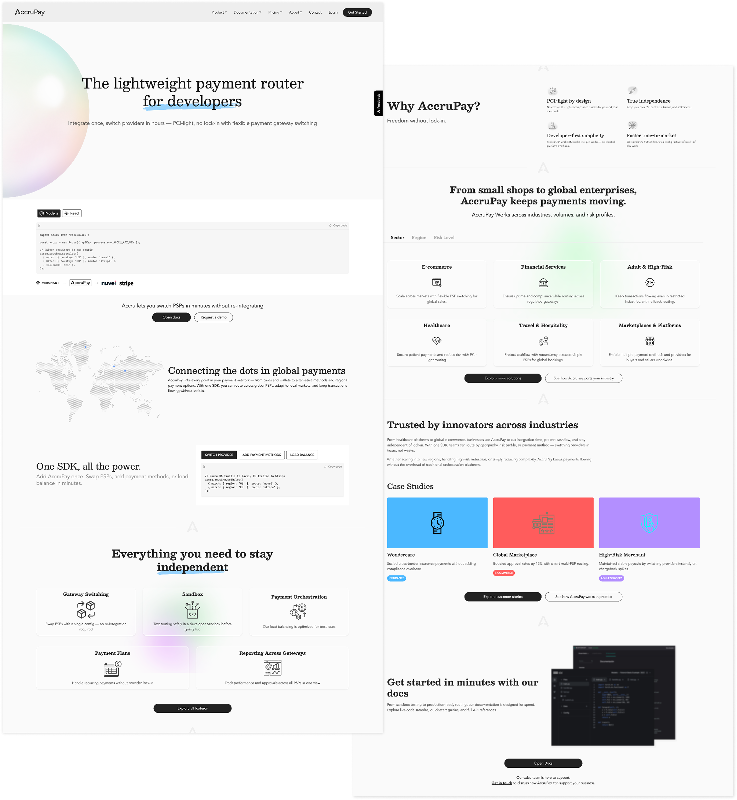
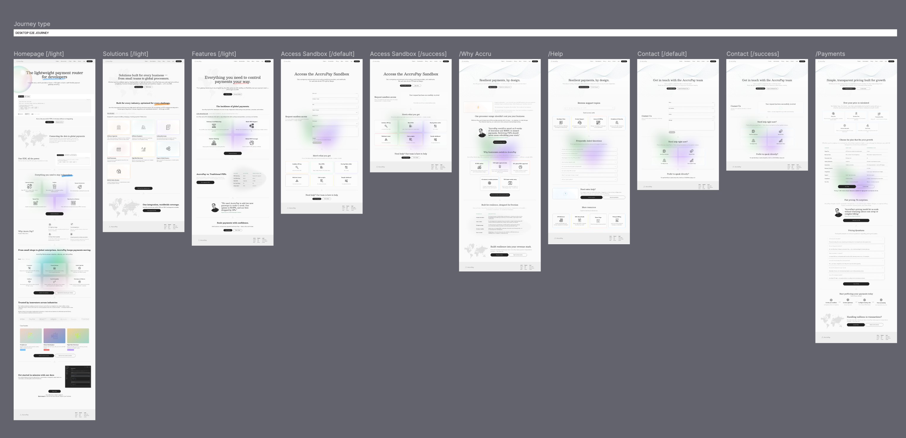
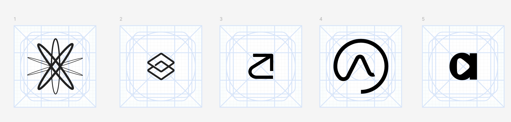
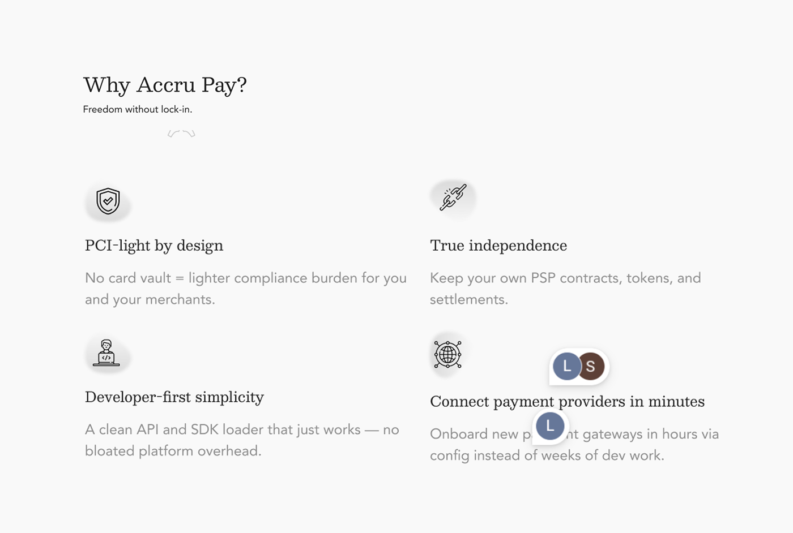

Payment infrastructure
that doesn't collapse.
A developer-first payment orchestration platform that routes, switches and recovers across providers — so one failed gateway doesn't take down your revenue.
Scope. Product strategy, design direction, brand system, developer experience — zero to launch.
Outcome. Recently launched · live site · investor + customer conversations · platform foundation for the next stage.
structure
Payment infrastructure is invisible — until it fails.
For businesses at scale, dependence on a single payment provider creates real risk: dropped approvals, lost revenue, no leverage. AccruPay's job was to communicate a complex technical proposition in a way that felt credible to developers, clear to operators, and differentiated from heavier orchestration platforms.
Watch a $249 charge route through three providers. One fails. Recovery is automatic.
Most payment products talk about flexibility. The real business fear is interruption. AccruPay's design point of view: structure complexity so teams can act in seconds when revenue is on the line — not after a rebuild.
From smart toolkit to infrastructure layer.
The early proposition was a "smart payments toolkit" for SMBs. The stronger story sitting underneath was about resilience and provider independence. The product, brand and developer experience all flowed from that single reframe.
The clearer proposition was hiding inside the brief.
Discovery focused on making the product legible. The early framing positioned AccruPay around small business payment needs — but the stronger opportunity was elevating from features to resilience.
- Reviewed feature framing, audience clarity, product value, visual direction
- Separated SMB needs from the larger infrastructure story emerging underneath
- Identified resilience, routing and provider independence as the stronger territory

Independence · Speed · Clarity.
Three principles that became the foundation for every design decision across product, brand and experience. Not a bloated enterprise suite — a sharp infrastructure layer.
- Independence over dependency — businesses shouldn't be locked into a single provider
- Speed over configuration — teams need to act immediately when payments fail
- Clarity over complexity — infrastructure should feel understandable without losing technical depth

One system — brand, product, developer experience.
From identity to documentation, every touchpoint was built from the same point of view. Technical credibility through restrained layouts, documentation cues and code-led content; reassurance through clear hierarchy and soft motion.
- Brand identity, logo, sub-brand logic, typography, motion direction
- Marketing site, onboarding, pricing, support, documentation, demo paths
- Product UI foundations: cards, status modules, dashboard patterns

Designed for two readers at once — the developer who has to integrate it, and the operator who has to trust it.
The system holds clear hierarchy between commercial messaging and technical detail. Reusable card patterns flex across benefits, pricing, support and use cases. Soft gradients keep infrastructure approachable; restrained layouts and code-led content keep it credible.

Developer experience — connect, route, recover.
The developer journey was structured around the operational model: PSP credentials, sandbox validation, routing rules, retries and fallback. The interface mirrors how engineers think — not how marketers wish engineers thought.
A launch-ready foundation.
The product foundation now supports early customer conversations, investor demos and continued platform development — built to scale across documentation, pricing, onboarding, support and dashboard surfaces.
Established AccruPay as a credible, resilient, developer-focused payment orchestration platform — with a stronger foundation for launch, fundraising, client conversations and the next stage of product build-out.
Recently launchedWhat this taught me.
- 01How to translate complex fintech infrastructure into a clear product and brand story.
- 02How to design for both developer confidence and executive-level business value.
- 03How to create early-stage product systems that can scale across marketing, documentation and interface design.
- 04How to shape a product from zero to credible launch through strategy, structure and craft.
- 05How to balance technical honesty with a sharper commercial point of view.